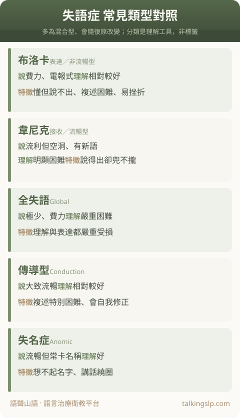

醫師或治療師常說「布洛卡失語」「韋尼克失語」——這些名字聽起來很陌生，其實代表的是不同的溝通樣貌：有人聽得懂卻講不出、有人講得很流利但內容兜不攏、有人連理解都困難。了解類型，能幫你更懂家人「卡在哪」，也更知道怎麼陪他溝通。
先分兩大類：流暢 vs 非流暢
臨床上常先用「說話順不順」把失語症分成兩大類[1]：
- 非流暢型（表達較費力）：說話吃力、句子短、常只蹦出關鍵詞，像發電報。代表是布洛卡失語症。
- 流暢型（說得出但內容有問題）：語句長度、語調正常，但用詞錯誤、內容空洞或聽不太懂別人說話。代表是韋尼克失語症。
再搭配「聽理解好不好」與「複述（跟著唸）能力」，就能區分出更細的類型。
常見類型對照表
下表為各類型的大致特徵（實際多為混合、且會隨復原改變，僅供理解參考）[1][2]：

| 類型 | 說話 | 理解 | 特徵重點 |
|---|---|---|---|
| 布洛卡 （表達／非流暢型） | 費力、簡短、電報式 | 相對較好 | 「懂但說不出」，複述困難，患者常察覺自己說錯而挫折。 |
| 韋尼克 （接收／流暢型） | 流利但內容空洞、有錯字或新語 | 明顯困難 | 「說得出卻兜不攏」，常不自覺說錯、聽不太懂別人。 |
| 全失語 （Global） | 極少、費力 | 嚴重困難 | 理解與表達都嚴重受損，常見於大範圍腦傷急性期。 |
| 傳導型 （Conduction） | 大致流暢 | 相對較好 | 自發說話與理解都還可以，但複述特別困難，常出現語音錯誤並自我修正。 |
| 失名症 （Anomic） | 流暢但常「卡名稱」 | 好 | 主要卡在想不起東西的名字，講話繞圈子（「那個…那個東西…」）。 |
另外，若語言能力是緩慢退化而非中風後突然出現，可能是另一類「原發性漸進性失語症（PPA）」，見〈記憶還好卻越來越說不出話？認識 PPA〉。
分類不是為了貼標籤
真實世界的患者多是混合型，而且類型會隨著自然恢復與復健改變（例如全失語逐漸轉為布洛卡型）。分類是幫助專業溝通與設計治療的工具，不是永久的身分標記——別被名稱綁住，重點是「他現在能懂多少、能說多少」。
對家屬的意義：懂類型，才知道怎麼陪
與其記住名稱，不如記住兩個問題：「他聽得懂嗎？」「他說得出嗎？」
- 理解好、卡在表達（如布洛卡）：給他時間、用是非題或選項、鼓勵用手勢與寫字，別替他把話搶完。
- 理解也受影響（如韋尼克、全失語）：放慢、句子簡短、搭配實物與圖片、確認他真的懂了，多用圖卡與溝通輔具。
完整的溝通原則與復健觀念，見〈認識失語症與溝通的橋梁〉。
想確認類型、開始復健？就近找語言治療
全台語言治療院所一覽（依縣市、行政區查詢）
含地址（可開啟 Google 地圖）、電話與官網。失語症的分型與復健，由醫院復健科或語言治療所的語言治療師評估。
在家可以怎麼練習？見〈失語症在家怎麼練習〉。
想安排語言復健？就近開始
全台語言治療院所一覽（依縣市、行政區查詢）
含地址（可開啟 Google 地圖）、電話與官網。失語症的語言復健由醫院復健科的語言治療師提供。
常見問題 FAQ
布洛卡和韋尼克失語症差在哪？
布洛卡（非流暢型）聽理解相對好、但說話費力簡短、複述困難，患者多能察覺說錯而挫折；韋尼克（流暢型）說話流暢卻內容空洞、常有新語，理解明顯困難且常不自覺。前者「懂但說不出」，後者「說得出卻兜不攏、也聽不太懂」。
失語症的分型會改變嗎？
會。急性期後隨著恢復與復健，類型與嚴重度可能改變，例如全失語逐漸轉為布洛卡型。分類是描述當下溝通樣貌的工具，不是永久標籤。
知道是哪一型有什麼幫助？
幫助家屬判斷對方理解好不好、能不能說出口，選擇合適的溝通方式（給選項、用圖卡、放慢、確認理解），也讓語言治療能針對弱項設計訓練。
參考資料
- Damasio, A. R. (1992). Aphasia. New England Journal of Medicine, 326(8), 531–539.
- Goodglass, H., & Kaplan, E. (1983). The Assessment of Aphasia and Related Disorders (2nd ed.). Philadelphia: Lea & Febiger.（波士頓失語症分類）
- American Speech-Language-Hearing Association (ASHA). Aphasia (Practice Portal). 取自 https://www.asha.org/practice-portal/
本文內容僅供衛教參考，無法取代專業評估與診斷。失語症的分型需由語言治療師與神經科、復健科醫師綜合評估。